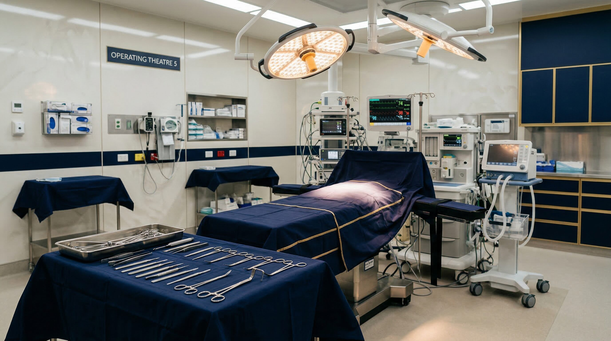
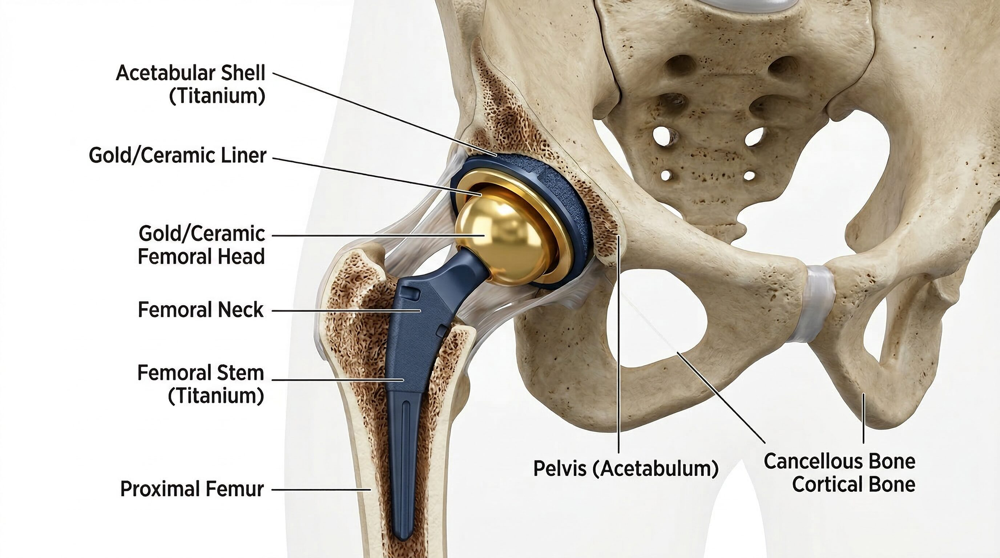
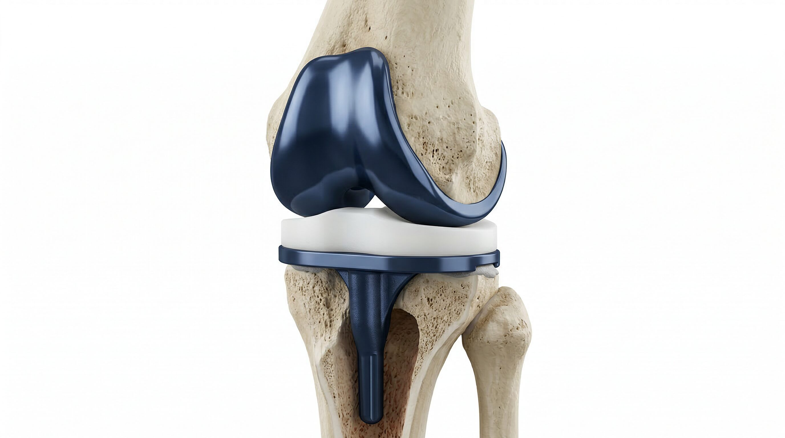
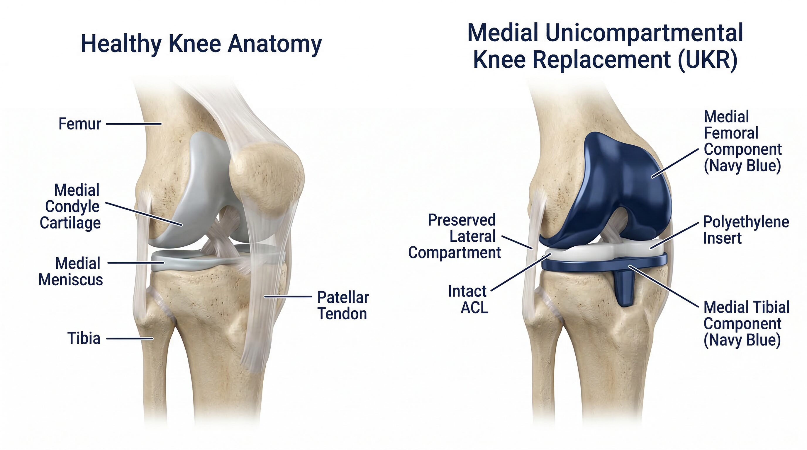
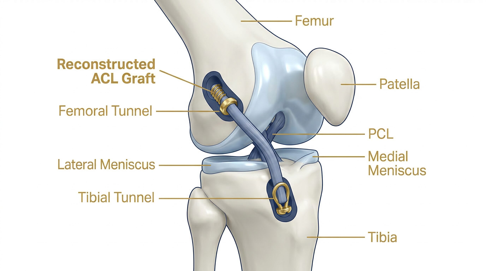
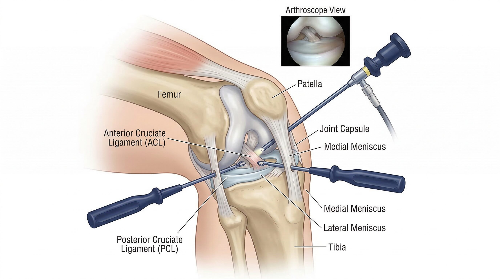
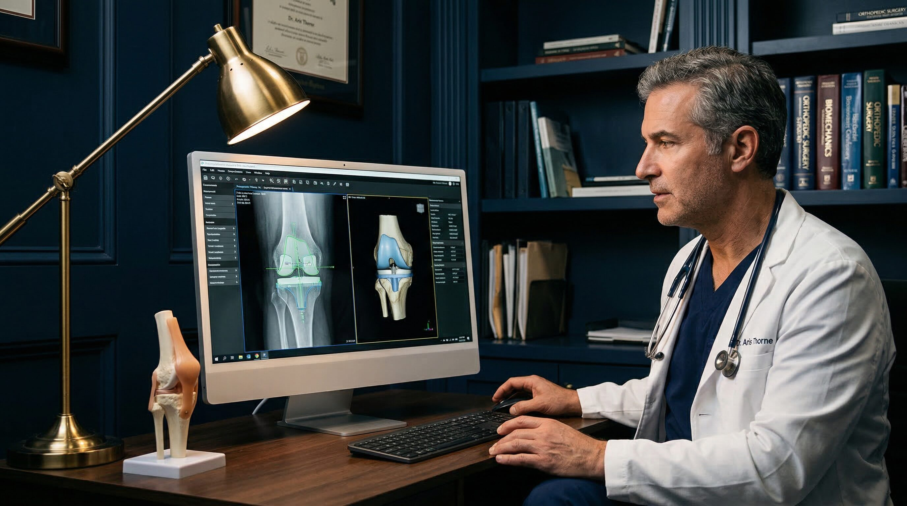

Perth Orthopaedic Surgeon
Fellowship-trained orthopaedic surgeon specialising in hip & knee replacement and sports knee surgery. Proudly serving patients across Perth and regional Western Australia.
About Your Surgeon
Mr Brett Bairstow is a fellowship-trained orthopaedic surgeon who has served the Perth community for over two decades. He completed his undergraduate studies at the University of Western Australia and achieved Fellowship of the Royal Australasian College of Surgeons (FRACS) in 2002.
Following specialist training, Mr Bairstow undertook additional post-FRACS fellowship training in arthroplasty and sports surgery at SportsMed South Australia, and in lower limb joint replacement at the Royal Bournemouth Hospital in the United Kingdom. He sub-specialises in hip and knee replacement and has a particular interest in preoperative planning and simulation of lower limb joint replacements.
Areas of Speciality
Mr Bairstow offers a comprehensive range of orthopaedic procedures, from primary joint replacement to complex sports knee surgery and ACL reconstruction.

Total hip arthroplasty to relieve pain and restore mobility in patients with hip osteoarthritis or other degenerative conditions.
Learn More
Primary total knee arthroplasty for advanced knee osteoarthritis, using the latest implant technology to maximise function and longevity.
Learn More
Unicompartmental knee arthroplasty when only one part of the knee is affected, preserving healthy bone and soft tissue.
Learn More
Anterior cruciate ligament reconstruction for athletes and active patients following complete ACL rupture, enabling return to sport.
Learn More
Minimally invasive arthroscopic surgery for meniscal tears, cartilage problems, and other knee pathologies requiring surgical management.
Learn More
A particular area of interest — detailed preoperative simulation of lower limb joint replacements to optimise alignment and patient outcomes.
Learn MoreYour Experience
From your first referral through to recovery, Mr Bairstow and his team are committed to keeping you informed and supported at every step.
Ask your general practitioner for a referral to Mr Bairstow. Referrals can be sent to our Osborne Park rooms.
Mr Bairstow will review your history, examine you, and discuss imaging findings to formulate a personalised treatment plan.
Detailed preoperative planning, health optimisation advice, and preparation for your admission to Mount Private Hospital.
Structured post-operative care, physiotherapy guidance, and regular follow-up reviews to ensure the best possible outcome.
Consulting Locations
Mr Bairstow consults at two convenient locations across Western Australia.
Professional Memberships & Affiliations
The content on this website is intended for informational purposes only and does not constitute medical advice. Always consult a qualified medical professional for personalised treatment recommendations. A referral from your GP is required to see Mr Bairstow.